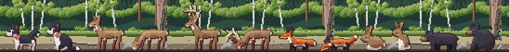
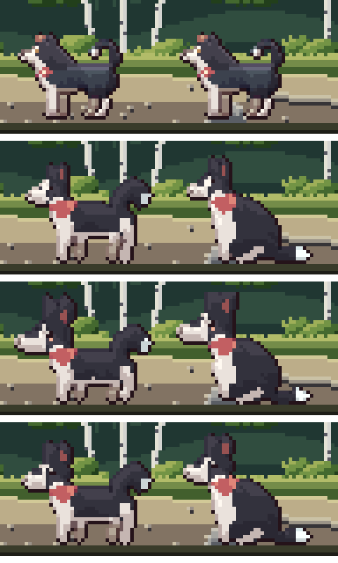
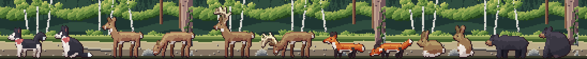

<title>Animal Redesign Study</title>
<meta name="claude:viewport-fit-sides" content="cover">
<link rel="preconnect" href="https://fonts.googleapis.com">
<link rel="stylesheet" href="https://fonts.googleapis.com/css2?family=Pixelify+Sans:wght@500;700&family=Source+Serif+4:opsz,wght@8..60,400;8..60,600&family=JetBrains+Mono:wght@400;600&display=swap">
<style>
/* Layout: a single reading column like a field-station report, with full-bleed image plates and swatch strips drawn from the lake itself. */
:root {
  --bg: #eef1ec;
  --panel: #e2e8e2;
  --ink: #1b2826;
  --muted: #566764;
  --line: #c3cec7;
  --accent: #a24f45;
  --pine: #2d5747;
  --display: "Pixelify Sans", "Courier New", monospace;
  --body: "Source Serif 4", Georgia, "Times New Roman", serif;
  --mono: "JetBrains Mono", ui-monospace, Menlo, Consolas, monospace;
}
@media (prefers-color-scheme: dark) {
  :root:not([data-theme="light"]) {
    --bg: #0f1918; --panel: #172423; --ink: #e2e9e4; --muted: #97a9a4; --line: #2a3b39;
    --accent: #e29a8b; --pine: #86bba4; color-scheme: dark;
  }
}
:root[data-theme="dark"] {
  --bg: #0f1918; --panel: #172423; --ink: #e2e9e4; --muted: #97a9a4; --line: #2a3b39;
  --accent: #e29a8b; --pine: #86bba4; color-scheme: dark;
}
* { box-sizing: border-box; }
body {
  background: var(--bg); color: var(--ink); font-family: var(--body); font-size: 17px; line-height: 1.6;
  padding-left: max(16px, env(safe-area-inset-left, 0px)); padding-right: max(16px, env(safe-area-inset-right, 0px));
  padding-block: 28px 64px;
}
main { max-width: 720px; margin: 0 auto; display: flex; flex-direction: column; gap: 44px; }
h1, h2, h3 { font-family: var(--display); font-weight: 700; line-height: 1.15; text-wrap: balance; margin: 0; }
h1 { font-size: clamp(32px, 7vw, 46px); letter-spacing: 0.5px; }
h2 { font-size: 26px; color: var(--pine); }
h3 { font-size: 19px; font-weight: 500; }
p { margin: 0; max-width: 65ch; }
section { display: flex; flex-direction: column; gap: 16px; }
.eyebrow { font-family: var(--mono); font-size: 12px; letter-spacing: 1.5px; text-transform: uppercase; color: var(--muted); }
.lede { font-size: 19px; }
a { color: var(--accent); }
figure { margin: 0; display: flex; flex-direction: column; gap: 8px; }
figure img { width: 100%; image-rendering: pixelated; border-radius: 4px; display: block; }
figcaption { font-size: 14px; color: var(--muted); }
.stats { display: grid; grid-template-columns: repeat(auto-fit, minmax(150px, 1fr)); gap: 12px; }
.stat { border-top: 3px solid var(--pine); padding-top: 8px; display: flex; flex-direction: column; gap: 2px; }
.stat b { font-family: var(--display); font-size: 30px; font-weight: 700; font-variant-numeric: tabular-nums; }
.stat span { font-size: 14px; color: var(--muted); }
ol.findings { margin: 0; padding-left: 1.4em; display: flex; flex-direction: column; gap: 12px; }
ol.findings li::marker { font-family: var(--mono); color: var(--accent); }
ol.findings b { font-weight: 600; }
.meter { display: grid; grid-template-columns: 9.5em 1fr; gap: 6px 12px; align-items: center; font-size: 14px; }
.meter .bars { display: flex; flex-direction: column; gap: 3px; }
.bar { height: 10px; border-radius: 2px; background: var(--line); position: relative; }
.bar i { position: absolute; inset: 0 auto 0 0; border-radius: 2px; }
.bar.ours i { background: var(--pine); }
.bar.pack i { background: var(--accent); }
.legend { display: flex; gap: 16px; font-size: 13px; color: var(--muted); flex-wrap: wrap; }
.legend span::before { content: ""; display: inline-block; width: 10px; height: 10px; border-radius: 2px; margin-right: 6px; vertical-align: -1px; }
.legend .l-ours::before { background: var(--pine); }
.legend .l-pack::before { background: var(--accent); }
.skies { display: flex; flex-direction: column; gap: 6px; }
.sky { display: grid; grid-template-columns: 7.5em 1fr; align-items: center; gap: 12px; font-size: 14px; }
.sky div { height: 30px; border-radius: 3px; }
.swatches { display: grid; grid-template-columns: repeat(auto-fit, minmax(200px, 1fr)); gap: 14px; }
.sw { display: flex; flex-direction: column; gap: 6px; min-width: 0; }
.sw .strip { display: flex; height: 34px; border-radius: 3px; overflow: hidden; }
.sw .strip i { flex: 1; }
.sw b { font-weight: 600; font-size: 15px; }
.sw span { font-size: 13px; color: var(--muted); font-family: var(--mono); overflow-wrap: anywhere; }
.lessons { display: grid; grid-template-columns: repeat(auto-fit, minmax(250px, 1fr)); gap: 18px 24px; }
.lessons div { display: flex; flex-direction: column; gap: 4px; }
.lessons h3 { color: var(--accent); }
.lessons p { font-size: 15px; }
ol.rules { margin: 0; padding: 0; list-style: none; counter-reset: r; display: flex; flex-direction: column; border-top: 1px solid var(--line); }
ol.rules li { counter-increment: r; display: grid; grid-template-columns: 2.4em 1fr; gap: 8px; padding: 12px 0; border-bottom: 1px solid var(--line); }
ol.rules li::before { content: counter(r, decimal-leading-zero); font-family: var(--mono); color: var(--muted); font-size: 14px; padding-top: 3px; }
.qs { display: flex; flex-direction: column; gap: 14px; }
.q { background: var(--panel); border-radius: 6px; padding: 16px 18px; display: flex; flex-direction: column; gap: 8px; }
.q h3 { font-size: 18px; }
.q ul { margin: 0; padding-left: 1.2em; font-size: 15px; display: flex; flex-direction: column; gap: 4px; }
.q .rec { font-size: 14px; color: var(--pine); font-family: var(--mono); }
.next { font-size: 15px; color: var(--muted); }
code { font-family: var(--mono); font-size: 0.85em; }
.viewer { display: flex; flex-direction: column; gap: 10px; }
.viewer img { width: 100%; height: auto; image-rendering: pixelated; border-radius: 4px; display: block; background: var(--panel); }
.cardimg { max-width: 480px; }
.pick { display: flex; flex-wrap: wrap; gap: 6px; }
.pick button { font: 600 14px var(--mono); padding: 8px 12px; border-radius: 4px; border: 1px solid var(--line); background: var(--panel); color: var(--ink); cursor: pointer; min-width: 44px; }
.pick button[aria-pressed="true"] { background: var(--pine); color: var(--bg); border-color: var(--pine); }
.pick button:focus-visible { outline: 2px solid var(--accent); outline-offset: 2px; }
.cap { font-size: 15px; min-height: 3em; }
.cards { display: grid; grid-template-columns: repeat(auto-fit, minmax(210px, 1fr)); gap: 16px; }
.card { display: flex; flex-direction: column; gap: 6px; }
.card h3 { color: var(--accent); }
.card p { font-size: 15px; }
.card ul { margin: 0; padding-left: 1.1em; font-size: 14px; color: var(--muted); display: flex; flex-direction: column; gap: 3px; }
.motion { display: grid; grid-template-columns: repeat(4, 1fr); gap: 10px; }
.motion figure img { aspect-ratio: 390 / 630; height: auto; }
@media (max-width: 520px) { .motion { grid-template-columns: repeat(2, 1fr); } }
</style>

<main>
  <header style="display:flex;flex-direction:column;gap:12px">
    <span class="eyebrow">Reel It In · Study 8 · 22 Oct 2026</span>
    <h1>The land animals, redesigned</h1>
    <p class="lede">You felt Olive, the deer, fox, hare and bear were stiff and blocky (bodies like boxes, legs like sticks) and not cozy enough. All five are redrawn here from scratch, three ways, each standing and in a pose of its own.</p>
  </header>

  <section>
    <span class="eyebrow">Your pick, corrected</span>
    <h2>C, with every model checked</h2>
    <p>You picked C and pointed out that Olive's eyes didn't show and the deer lost her ears when she bent down. Going over every model close up:</p>
    <ol class="rules">
      <li><b>Olive:</b> her eye now has the same design as every other animal's: a dark eye with a catchlight. (A grey rim, then a brown eye with a black pupil, were tried first and taken back out, at your call.)</li>
      <li><b>The deer, drinking:</b> her ears folded back along her neck and merged into it. They now stand up and back from the top of her head, the near one showing its pink inside.</li>
      <li><b>The fox:</b> his ears were all orange and melted into his head; a red fox's ears are black-backed, and now his are.</li>
      <li><b>The hare, sitting up:</b> both ears merged into one wide block; they're parted now, the far one angled back.</li>
      <li><b>New: a buck</b> beside the doe: hardened late-summer antlers (two beams sweeping forward, tines rising from them), a heavier neck, a darker coat. Drinking, his whole head (ears and antlers with it) turns down as one piece, so the antlers sweep forward the way his head points.</li>
    </ol>
    
  </section>

  <section class="viewer">
    <span class="eyebrow">One animal at a time</span>
    <div class="pick" role="group" aria-label="Animal">
      <button data-a="olive" aria-pressed="true">Olive</button>
      <button data-a="deer" aria-pressed="false">Doe</button>
      <button data-a="buck" aria-pressed="false">Buck</button>
      <button data-a="fox" aria-pressed="false">Fox</button>
      <button data-a="hare" aria-pressed="false">Hare</button>
      <button data-a="bear" aria-pressed="false">Bear</button>
    </div>
    
    <p class="cap">Top to bottom: <b>now</b>, then <b>A</b> natural curves, <b>B</b> cozy storybook, <b>C</b> cozy naturalist. Left: standing; right: its own pose.</p>
  </section>

  <section>
    <span class="eyebrow">The three directions</span>
    <h2>What each one tries</h2>
    <div class="cards">
      <div class="card"><h3>A &middot; Natural curves</h3><p>True proportions with the stiffness gone: arched backs, deep chests and tucked bellies, round haunches, S-curved necks, legs that taper and bend at real joints down to small feet.</p><ul><li>The most like the real animals</li><li>Cozy through pose, not proportion</li></ul></div>
      <div class="card"><h3>B &middot; Cozy storybook</h3><p>The same animals pushed toward charm: heads a third bigger, shorter legs, rounder bodies, big eyes with a catchlight and a touch of blush.</p><ul><li>The cutest; reads at a glance on a phone</li><li>Less like the real north woods</li></ul></div>
      <div class="card"><h3>C &middot; Cozy naturalist</h3><p>In between: real animals, a little rounder and softer, the head a touch larger, eyes with a catchlight so they look back at you.</p><ul><li>Warm without going cartoon</li><li>The middle road</li></ul></div>
    </div>
  </section>

  <section class="viewer">
    <span class="eyebrow">The whole cast, side by side</span>
    <div class="pick" role="group" aria-label="Direction">
      <button data-s="natural" aria-pressed="true">A</button>
      <button data-s="cozy" aria-pressed="false">B</button>
      <button data-s="between" aria-pressed="false">C</button>
    </div>
    
  </section>

  <section>
    <span class="eyebrow">How they're made now</span>
    <h2>Drawn from shapes</h2>
    <p>Instead of typing each pixel, every animal is described as rounded masses (body, neck, head, ears, tail, markings) that a smooth curve runs through, and legs as chains of joints that taper from hip to foot. It's drawn four times larger and brought down to the grid, so curves come out clean. Each direction reshapes the same anatomy, which is how one animal can be drawn three ways, and how new poses for walking and running will be built once you pick. They're finished like the game's animals now: the selective edge, lit as one mass. Olive keeps her markings, her bandana and her curled, white-tipped tail.</p>
  </section>

  <section>
    <span class="eyebrow">Your call</span>
    <h2>Next</h2>
    <p>Tell me if anything still looks off. Then I'll build every animation (walking and idling for each, the doe and the buck both visiting, and Olive's run, leap, swim and shake) in this design and put them in the game.</p>
  </section>
</main>
<script>
(function () {
  var a = "olive", st = "natural";
  var card = document.getElementById("card"), row = document.getElementById("row");
  var label = { natural: "A", cozy: "B", between: "C" };
  function show() {
    card.src = "study8/card-" + a + ".png";
    card.alt = a.charAt(0).toUpperCase() + a.slice(1) + ": now, then versions A, B and C";
    row.src = "study8/" + st + ".png";
    row.alt = "All five, version " + label[st];
    document.querySelectorAll("[data-a]").forEach(function (b) { b.setAttribute("aria-pressed", b.dataset.a === a); });
    document.querySelectorAll("[data-s]").forEach(function (b) { b.setAttribute("aria-pressed", b.dataset.s === st); });
  }
  document.querySelectorAll("[data-a]").forEach(function (b) { b.addEventListener("click", function () { a = b.dataset.a; show(); }); });
  document.querySelectorAll("[data-s]").forEach(function (b) { b.addEventListener("click", function () { st = b.dataset.s; show(); }); });
  show();
})();
</script>
